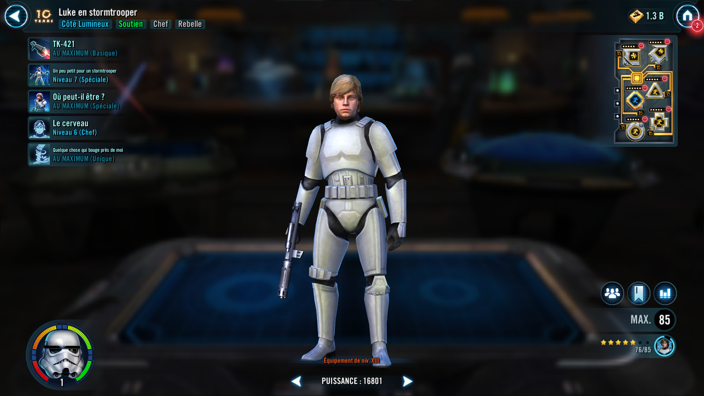
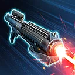
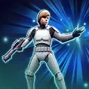
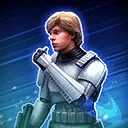
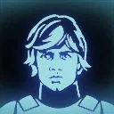
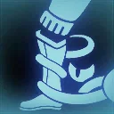

Stormtrooper Luke
Short for a Stormtrooper, but mighty as a Rebel Support
Short for a Stormtrooper, but mighty as a Rebel Support


Deal Special damage to target enemy, if it is Stormtrooper Luke's turn, inflict target enemy with Buff Disruption for 1 turn, which can't be dispelled or resisted. This attack has high damage variance.
Buff Disruption: Immune to buffs until damaged by an attack; Once damaged by an attack, lose 100% Turn Meter

Dispel all buffs on all enemies. Rally all Rebel allies, and they gain Tenacity Up for 2 turns, which can't be dispelled or prevented. Grant target other ally a bonus turn. If that target ally is Princess Leia, she gains 30% Offense and ignores Taunt effects during this bonus turn. If Princess Leia and Stormtrooper Han are allies, their chance effects increased to 100% for 2 turns.
Rallied characters act based on their role:
- Tanks Taunt and gain Critical Hit Immunity for 2 turns
- Attackers assist
- Healers and Supports restore 15% Health and Protection to all allies

Inflict Vulnerable on all enemies for 1 turn. Rebel Attacker allies gain Offense Up for 2 turns and non-Tank Rebel allies gain Stealth for 1 turn. Call all Rebel allies to assist, dealing 10% more damage for each Stealthed ally.

At the start of battle, Rebel allies gain 10% Critical Chance, Critical Damage, Defense, Max Health and Max Protection. If Princess Leia and Stormtrooper Han are present, these increases are tripled. While a Rebel ally has more than 50% Health, they have 100% Defense and whenever they use an ability on their turn, they Expose the target enemy for 1 turn. While a Rebel ally has less than 50% Health, they gain 50% Offense.
While a Rebel ally is Stealthed, they have 20% Defense Penetration. If Stealth or Taunt is dispelled from a Rebel ally, they gain Defense Up and Foresight for 1 turn. If a Rebel ally removes Turn Meter from an enemy, Distract that enemy for 1 turn, which can't be evaded or resisted.
Distracted: Can't gain bonus Turn Meter
Omicron Boost : While in 3v3 Grand Arenas, and there is an allied Princess Leia, Stormtrooper Han, and no enemy Galactic Legends:
Whenever Stealth is dispelled from a Rebel ally, reduce the cooldowns of their abilities by 1. While Stealthed, Princess Leia ignores the target enemy's Protection. Whenever a Rebel ally scores a critical hit against an enemy, that enemy loses 10% Turn Meter.
Whenever an enemy is Distracted, they are also Ability Blocked for 1 turn, which can't be evaded or resisted. Whenever a Rebel ally is Dazed or Stunned, dispel that effect, Distract and inflict Protection Disruption for 1 turn on the enemy, which can't be evaded or resisted.
Princess Leia and Stormtrooper Han have their chance effects increased to 100% until the end of battle. While Stormtrooper Luke is active, he gains 15% Evasion, increased by 5% (stacking, max 50%) each time a Rebel ally attacks out of turn. Tank allies gain 100% Defense, increased by 5% (stacking, max 450%) each time they take damage. Attacker allies gain 15% Critical Damage and Offense, increased by 1% (stacking, max 135%) each time they score a critical hit against an enemy.
While another ally has Protection, Stormtrooper Luke can't be defeated.

At the start of battle, Stormtrooper Luke gains 10 Speed. If Princess Leia and Stormtrooper Han are allies, they and Stormtrooper Luke gain 30 Speed until the end of the battle instead.
At the start of each encounter, all Rebel Tank allies Taunt for 1 turn, and all other Rebel allies Stealth for 1 turn.
Whenever a Rebel ally Stealths, all other Rebel Tank allies Taunt for 1 turn. Whenever a Rebel ally gains bonus Turn Meter while below 100% Turn Meter, they gain Protection Up (10%, stacking, max 50%) for 2 turns. Whenever a Rebel ally scores a critical hit, they recover 10% Health and Protection.